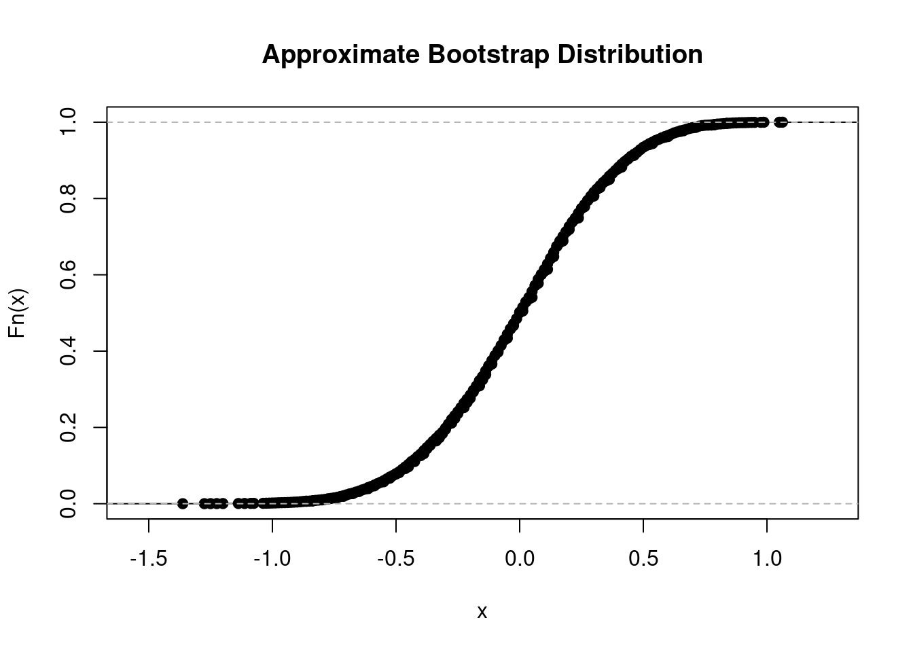

observedSample <- c(5.20, 4.80, 5.30, 4.60,
6.10, 5.40, 5.80, 5.50)
myecdf_fun <- ecdf(observedSample)
plot(myecdf_fun, main="")
The bootstrap is an important tool of modern statistical analysis. It establishes a general framework for simulation-based statistical inference. In simple situations the uncertainty of an estimate may be gauged by analytical calculations (asymptotic statistics) leading, for example, to the construction of (approximate) confidence intervals. The bootstrap replaces complicated and often inaccurate approximations to biases, variances and other measures of uncertainty by computer simulations.
Some literature:
The distribution of a real-valued random variable \(X\) can be completely described by its distribution function \[ F(x)=P(X\leq x)\quad \text{for all } x\in\mathbb{R}. \]
For given data, the sample analogue of \(F\) is the so-called empirical distribution function, which is an important tool of statistical inference.
Data: i.i.d. random sample \(X_1,\dots,X_n\) from \(X\sim F\)
Let \(1_{(\cdot)}\) denote the indicator function, i.e., \(1_{(x\leq t)}=1\) if \(x\leq t\), and \(1_{(x\leq t)}=0\) if \(x>t.\)
Definition 3.1 (Empirical distribution function) \[ F_n(x)=\frac{1}{n} \sum_{i=1}^n 1_{(X_i\leq x)} \] I.e \(F_n(x)\) is the proportion of observations with \(X_i\le x,\) \(i=1,\dots,n.\)
Properties:
Structurally, \(F_n\) itself is a distribution function. \(F_n\) is the distribution function of a discrete random variable \(X^*\)
Example 3.1 (Empirical distribution function)
Some data:
| \(i\) | \(X_i\) |
|---|---|
| 1 | 5.20 |
| 2 | 4.80 |
| 3 | 5.40 |
| 4 | 4.60 |
| 5 | 6.10 |
| 6 | 5.40 |
| 7 | 5.80 |
| 8 | 5.50 |
Corresponding empirical distribution function using R:
observedSample <- c(5.20, 4.80, 5.30, 4.60,
6.10, 5.40, 5.80, 5.50)
myecdf_fun <- ecdf(observedSample)
plot(myecdf_fun, main="")
\(F_n(x)\) depends on the i.i.d. random sample \(X_1,\dots,X_n\) and thus is itself a random function.
We obtain
The basic idea of the bootstrap is to replace random sampling from the true (unknown) population \(F\) (infeasible Monte Carlo simulation) by random sampling from the empirical distribution \(F_n\) (feasible Monte Carlo simulation).
Population distribution \(F\): The random sample \(X_1,\dots,X_n\overset{\text{i.i.d.}}{\sim}F\) is generated by drawing observations independently and with replacement from the unknown population distribution function \(F\). That is, for each interval \([a,b]\) the probability of drawing an observation in \([a,b]\) is given by \[ P(X\in [a,b])=F(b)-F(a). \]
Empirical distribution \(F_n\): For large \(n,\) the empirical distribution \(F_n\) of the sample values is “close” to the unknown distribution \(F\) (Glivenko-Cantelli Theorem 3.1). That is, for \(n\rightarrow\infty\) the relative frequency of observations \(X_i\) in \([a,b]\) converges to \(P(X\in [a,b])\)
\[
\begin{align*}
\underbrace{\frac{1}{n}\sum_{i=1}^n1_{(X_i\in[a,b])}}_{=F_n(b)-F_n(a)}&\to_p \underbrace{P(X\in [a,b])}_{=F(b)-F(a)}
\end{align*}
\]
The idea of the bootstrap consists in mimicking the data generating process: Instead of random sampling from the true unknown population distribution \(F,\) the bootstrap uses random sampling from the known \(F_n.\) This is justified by the insight that the empirical distribution \(F_n\) of the observed data is “similar” to the true distribution \(F\) (Glivenko-Cantelli Theorem 3.1).
The bootstrap method is attributed to Bradley Efron, who received the International Prize in Statistics (the Nobel price of statistics) for his seminal works on the bootstrap method.
Setup:
Inference: We are interested in evaluating the distribution of \[ \hat\theta-\theta \] in order to provide standard errors, construct confidence intervals, and to perform tests of hypothesis.
For large \(m\), the estimates \(\hat\theta_1^*,\hat\theta_2^*,\dots,\hat\theta_m^*\) allow to approximate the bootstrap distribution of \(\hat\theta^*-\hat\theta\) arbitrarily well.
The bootstrap distribution of \[ \hat\theta^*-\hat\theta \] is used to approximate the unknown distribution of \[ \hat\theta-\theta. \]
Note: For the bootstrap distribution \(\hat\theta\) is a “population parameter”.
The theoretical justification of the bootstrap is based on asymptotic arguments. In many important applications the bootstrap is able to provide confidence intervals or tests which are more accurate than those based on standard asymptotic approximations.
The bootstrap does not always work. A necessary condition for the use of the bootstrap is the consistency of the bootstrap approximation.
The bootstrap is called consistent if, for large \(n\), the bootstrap distribution of \(\hat{\theta}^* -\hat{\theta}\) is a good approximation of the underlying distribution of \(\hat{\theta}-\theta\), i.e. \[ \text{distribution}(\hat{\theta}^* -\hat{\theta}\ |{\cal S}_n)\approx \text{distribution}(\hat{\theta}-\theta). \] The following definition states this more precisely.
Definition 3.2 (Bootstrap consistency) If for some \(\gamma>0\) (usually: \(\gamma=1/2\)) we have \(n^\gamma(\hat{\theta}-\theta)\rightarrow_d Z\) for some random variable \(Z\) with a non-degenerate distribution, then the bootstrap is consistent if and only if \[ \sup_\delta \left| P\left(n^\gamma(\hat\theta^*-\hat\theta)\le \delta|{\cal S}_n\right) -P\left(n^\gamma(\hat\theta -\theta)\le \delta\right) \right|\rightarrow_p 0 \] as \(n\to\infty.\)
Luckily, the standard bootstrap works for a large number of statistical and econometrical problems. However, there are some crucial requirements:
The standard bootstrap will usually fail if one of the above conditions 1 or 2 is violated. For instance,
Note: In order to deal with more complex situations alternative bootstrap procedures have been proposed in the literature (e.g. the block-bootstrap in case of time-series data).
Setup:
Inference Problem: What is the distribution of \[ \bar{X} -\mu? \]
Now assume that \(n=8\) and that the observed sample is
| \(i\) | \(X_i\) |
|---|---|
| 1 | -0.6 |
| 2 | 1.0 |
| 3 | 1.4 |
| 4 | -0.8 |
| 5 | 1.6 |
| 6 | 1.9 |
| 7 | -0.1 |
| 8 | 0.7 |
observedSample <- c(-0.6, 1.0, 1.4, -0.8,
1.6, 1.9, -0.1, 0.7)mean(observedSample) \(=\) 0.6375
Bootstrap:
The observed sample \[ {\cal S}_n=\{X_1,\dots,X_n\} \] is taken as underlying empirical “population” in order to generate the bootstrap sample \(X_1^*,\dots,X_n^*\):
## generating a bootstrap sample
bootSample <- sample(x = observedSample,
size = length(observedSample),
replace = TRUE)For the given data with \(n=8\) observations, there are \[ n^n=8^8=16,777,216 \] possible bootstrap samples which are all equally probable.
The conditional distribution function of \(\bar{X}^*-\bar{X}\) given \(\mathcal{S}_n\) \[ P\left(\bar{X}^*-\bar{X}<\delta|\mathcal{S}_n\right) \] can be approximated using a Monte-Carlo simulation. For this, we draw new data \(X_1^*,\dots,X_n^*\) from \(F_n,\) i.e., we sample with replacement data points from the observed sample \(\mathcal{S}_n=\{X_1,\dots,X_n\}.\)
Using a large number \(m\) (e.g. \(m=10000\)) of simulation runs allows us to generate bootstrap estimates \[ \bar{X}^*_1,\bar{X}^*_2,\dots,\bar{X}^*_m \]
These bootstrap estimates are then used to approximate the bootstrap distribution \[ %\overbrace{ \underbrace{P\left(\bar X^*-\bar X\leq \delta |{\cal S}_n\right)}_{\text{bootstrap distribution}}%}^{=P^*\left(\bar X^*-\bar X\leq \delta\right)} \approx \frac{1}{m}\sum_{k=1}^m 1_{( \bar X^*_k-\bar X\leq \delta)}, \] where this approximation will be arbitrarily precise as \(m\to\infty.\) (So, we can effectively ignore this type of approximation error.)
n <- length(observedSample)
Xbar <- mean(observedSample)
m <- 10000 # number of bootstrap samples
Xbar_boot <- vector(mode = "double", length = m)
for(k in seq_len(m)){
bootSample <- sample(x = observedSample,
size = n,
replace = TRUE)
Xbar_boot[k] <- mean(bootSample)
}
plot(ecdf( Xbar_boot - Xbar ),
main="Approximate Bootstrap Distribution")
To approximate, for instance, the standard error of \(\bar{X},\) we can now simply use the empirical standard deviation of \(\bar{X}^*_k,\) \(k=1,\dots,m.\)
round(sd(Xbar_boot), 2)[1] 0.34In the bootstrap literature one frequently finds the notation \[ \mathbb{E}^*(\cdot),\;\mathbb{V}^*(\cdot),\;\text{and}\;P^*(\cdot) \] to denote the conditional expectation \[ \mathbb{E}^*(\cdot)=\mathbb{E}(\cdot|\mathcal{S}_n), \] the conditional variance \[ \mathbb{V}^*(\cdot)=\mathbb{V}(\cdot|\mathcal{S}_n), \] and the conditional probability \[ P^*(\cdot)=P(\cdot|\mathcal{S}_n), \] given the sample \({\cal S}_n.\)
The bootstrap focuses on the conditional distribution of \(X_1^*,\dots,X_n^*\) given the observed sample \({\cal S}_n=\{X_1,\dots,X_n\}\) and the resulting conditional distribution of \[ (\bar X^* -\bar X)|\mathcal{S}_n. \] These conditional distributions are usually called bootstrap distributions.
We can analyze the bootstrap distribution of \(\bar X^* -\bar X\), since we know 🤟 the discrete distribution of the conditional random variables \[ X_i^*|\mathcal{S}_n,\;i=1,\dots,n, \] even though, we do not know the distribution of \(X_i\sim F,\) \(i=1,\dots,n.\)
For each \(i=1,\dots,n\), the possible values of the discrete random variable \(X_i^*|\mathcal{S}_n\) are \[ X_i^*|\mathcal{S}_n\in\{X_1,\dots,X_n\}, \] and each of these values is equally probable \[ \begin{align*} P^*(X_i^*=X_1)&= P(X_i^*=X_1|{\cal S}_n) = \frac{1}{n} \\[2ex] P^*(X_i^*=X_2)&= P(X_i^*=X_2|{\cal S}_n) = \frac{1}{n} \\[2ex] &\vdots\\[2ex] P^*(X_i^*=X_n)&= P(X_i^*=X_n|{\cal S}_n) = \frac{1}{n}. \end{align*} \]
Thus, we know the whole distribution of the (conditional) discrete random variable \(X_i^*|\mathcal{S}_n\) and, therefore, can compute, for instance, easily its conditional mean and its variance.
The conditional mean of \(X_i^*\) is \[ \begin{align*} \mathbb{E}^*(X_i^*) &=\mathbb{E}(X_i^*|{\cal S}_n)\\[2ex] &=\frac{1}{n}X_1+\frac{1}{n}X_2+\dots+\frac{1}{n}X_n\\[2ex] &=\bar X \end{align*} \]
The conditional variance of \(X_i^*\) is \[ \begin{align*} \mathbb{V}^*(X_i^*) &=\mathbb{V}(X_i^*|{\cal S}_n)\\[2ex] &=\mathbb{E}((X_i^* - \mathbb{E}(X_i^*|{\cal S}_n))^2|{\cal S}_n)\\[2ex] &=\frac{1}{n}\sum_{i=1}^n (X_i-\bar X)^2\\[2ex] &=\hat\sigma^2 \end{align*} \]
That is, in the bootstrap sample \(X_1^*,\dots,X_n^*\) the “population” mean and the “population” variance are equal to the empirical mean, \(\bar{X},\) and the empirical variance, \(\hat{\sigma}^2,\) of the original sample \(X_1,\dots,X_n.\)
For any (measurable) function \(g\) we have \[ \mathbb{E}^*(g(X_i^*))=\mathbb{E}(g(X_i^*)|\mathcal{S}_n)=\frac{1}{n}\sum_{i=1}^n g(X_i). \] For instance, \(g(X_i)=1_{(X_i\leq \delta)}.\)
Conditioning on the observed sample \(\mathcal{S}_n=\{X_1,\dots,X_n\}\) is very important.
The unconditional distribution of \(X_i^*\) is equal to the unknown distribution \(F\) of \(X_i.\) This can be seen from the following derivation: \[ \begin{align*} P(X_i^*\leq \delta) &= P(1_{(X_i^*\leq \delta)}=1) \\[2ex] &= P(1_{(X_i^*\leq \delta)}=1) \cdot 1 + P(1_{(X_i^*\leq \delta)}=0) \cdot 0\\[2ex] &= E\left(1_{\left(X_i^*\leq \delta\right)}\right)\\[2ex] &= E\left[E\left(1_{\left(X_i^*\leq \delta\right)}|\mathcal{S}_n\right)\right]\\[2ex] &= E\left[\frac{1}{n}\sum_{i=1}^n 1_{\left(X_i\leq \delta\right)}\right]\\[2ex] &= \frac{n}{n}E\left[1_{\left(X_i\leq \delta\right)}\right]\\[2ex] &= P\left(X_i\leq \delta\right)=F(\delta) \end{align*} \]
Now consider the bootstrap distribution of \(\bar X^*\)
Firstly, let us derive the conditional mean and variance of \[ \bar X^* = \frac{1}{n}\sum_{i=1}^nX_i^*. \]
The conditional mean of \(\bar X^*\) is \[ \begin{align*} \mathbb{E}^*(\bar X^*) &=\mathbb{E}(\bar X^*|{\cal S}_n)\\ &=\frac{1}{n}\sum_{i=1}^n\mathbb{E}(X_i^*|{\cal S}_n)\\ &=\frac{1}{n}\sum_{i=1}^n \bar X\\ &=\frac{n}{n}\bar X \\ &=\bar X \end{align*} \]
The conditional variance of \(\bar X^*\) is \[ \begin{align*} \mathbb{V}^*(\bar X^*) &=\mathbb{V}(\bar X^*|{\cal S}_n)\\ &=\frac{1}{n^2}\sum_{i=1}^n \mathbb{V}(X_i^*|{\cal S}_n)\\ &=\frac{1}{n^2}\sum_{i=1}^n \hat\sigma^2\\ &=\frac{n}{n^2}\hat\sigma^2\\ &=\frac{1}{n}\hat\sigma^2, \end{align*} \] where \(\hat{\sigma}=\sqrt{\frac{1}{n}\sum_{i=1}^n\left(X_i - \bar{X}\right)^2}.\)
An appropriate central limit theorem argument implies that \[ \left(\left.\frac{\sqrt{n}(\bar X^* -\bar X)}{\hat\sigma}\right|{\cal S}_n\right)\rightarrow_{d} \mathcal{N}(0,1),\quad n\to\infty. \]
Moreover, \(\hat\sigma^2\) is a consistent estimator of \(\sigma^2,\) and thus asymptotically \(\hat\sigma^2\) may be replaced by \(\sigma\). Therefore, \[ \begin{align*} \left(\left.\frac{\sqrt{n}(\bar X^* -\bar X)}{\sigma}\right|{\cal S}_n\right)\rightarrow_{d} \mathcal{N}(0,1),\quad n\to\infty\\[2ex] \Rightarrow\left(\left.\sqrt{n}(\bar X^* -\bar X)\right|{\cal S}_n\right)\rightarrow_{d} \mathcal{N}(0,\sigma^2),\quad n\to\infty. \end{align*} \]
On the other hand, by the CLT, we also have that \[ \begin{align*} \left(\frac{\sqrt{n}(\bar X -\mu )}{ \sigma}\right) \rightarrow_{d} \mathcal{N}(0,1),\quad n\to\infty\\[2ex] \Rightarrow\left(\left.\sqrt{n}(\bar X - \mu)\right|{\cal S}_n\right)\rightarrow_{d} \mathcal{N}(0,\sigma^2),\quad n\to\infty. \end{align*} \]
This means that the bootstrap is consistent, since the bootstrap distribution of \[ \sqrt{n}(\bar X^* -\bar X)|{\cal S}_n \] asymptotically \((n\rightarrow\infty)\) coincides with the distribution of \[ \sqrt{n}(\bar X-\mu). \] In other words, for large \(n\), \[ \text{distribution}(\bar X^* -\bar X|{\cal S}_n)\approx \text{distribution}(\bar X-\mu). \]
This bootstrap consistency result justifies using the bootstrap distribution \[ P(\bar{X}^*-\bar{X}\leq \delta|\mathcal{S}_n) \approx \frac{1}{m}\sum_{k=1}^m 1_{( \bar X^*_k-\bar X\leq \delta)}, \] which we can approximate (arbitrary precise as \(m\to\infty\)) using the bootstrap realizations \[ \bar{X}^*_1,\;\bar{X}^*_2, \dots, \bar{X}^*_m. \]
Setup:
Bootstrap Approach:
The bootstrap now tries to approximate the true distribution of \(\hat p - p\) by the conditional distribution of \((\hat p^*-\hat p)|\mathcal{S}_n\) given the observed sample \({\cal S}_n,\) where the latter can be approximated arbitrarily well \((m\to\infty)\) using the bootstrap estimators \[ p^*_1,p^*_2,\dots,p^*_m; \] namely by \[ P\left(\hat{p}^* - \hat{p} \leq \delta|\mathcal{S}_n\right)\approx \frac{1}{m}\sum_{k=1}^m 1_{(\hat{p}^*_k - \hat{p} \leq\delta )}. \]
The bootstrap is called consistent if asymptotically \((n\rightarrow \infty)\) the conditional distribution of \((\hat p^*-\hat p)|{\cal S}_n\) coincides with the true distribution of \(\hat p - p.\) (Note: a proper scaling is required!)
The distribution of \(X_i^*|\mathcal{S}_n\)
The conditional random variable \(X_i^*|\mathcal{S}_n\) is a binary random variable \[ X_i^*|\mathcal{S}_n\in\{0,1\}. \] Since \(X_i^*\) is drawn independently and with replacement from \(\mathcal{S}_n,\) we obtain for each \(i=1,\dots,n,\) \[ \begin{align*} & P^*(X_i^*=1)=P(X_i^*=1|{\cal S}_n)=\hat p, \\[2ex] & P^*(X_i^*=0)=P(X_i^*=0|{\cal S}_n)=1-\hat p. \end{align*} \] Thus, \(X_i^*|{\cal S}_n\) is a Bernoulli distributed random variable with parameter \(p=\hat{p}\) \[ X_i^*|{\cal S}_n \sim\mathcal{Bern}(p=\hat p), \quad i=1,\dots,n.\\[5ex] \]
The distribution of \(\hat{p}^*|\mathcal{S}_n\)
The above implies that \(n \hat{p}^*|{\cal S}_n\) has a Binomial distribution with parameters \(n\) and \(p=\hat{p},\)
\[
\underbrace{n \hat{p}_i^*}_{=S^*}|{\cal S}_n \sim\mathcal{Binom}(n, p=\hat p), \quad i=1,\dots,n.
\]
Therefore, \[ \begin{align*} \mathbb{E}^*(n \hat p^*) &=\mathbb{E}(n \hat p^*|\ {\cal S}_n)\\[2ex] & = n \hat{p}\\[2ex] \Rightarrow \mathbb{E}^*(\hat p^*) & = \hat{p} \end{align*} \] and \[ \begin{align*} \mathbb{V}^*(n \hat p^*) &=\mathbb{V}(n \hat p^*|\ {\cal S}_n)\\[2ex] & = n \hat{p} (1- \hat{p})\\[2ex] \Rightarrow \mathbb{V}^*(\hat p^*) & = \frac{\hat{p}(1-\hat{p})}{n} \end{align*} \]
An appropriate central limit theorem argument implies that \[ \left(\left.\frac{\sqrt{n}(\hat p^* -\hat p)}{\sqrt{\hat p(1-\hat p)}}\right|{\cal S}_n\right) \rightarrow_d \mathcal{N}(0,1),\quad n\to\infty. \]
Moreover, \(\hat p\) is a consistent estimator of \(p,\) and thus \[ \hat p(1-\hat p)\rightarrow_p p(1-p),\quad n\rightarrow\infty. \] Therefore, \(\hat p(1-\hat p)\) can be replaced asymptotically by \(p(1-p)\), and \[ \left(\left.\frac{\sqrt{n}(\hat p^* -\hat p)}{ \sqrt{p(1-p)}}\right|{\cal S}_n\right)\rightarrow_d \mathcal{N}(0,1),\quad n\to\infty. \] So, we can conclude that, \[ \sup_\delta \left| P\left(\left.\frac{\sqrt{n}(\hat p^* -\hat p)}{\sqrt{p(1-p)}}\le \delta\right|{\cal S}_n\right)-\Phi(\delta)\right|\rightarrow_p 0 \] as \(n\rightarrow\infty,\) where \(\Phi\) denotes the distribution function of the standard normal distribution. This means that the bootstrap is consistent, i.e. for large \(n\) \[ \text{distribution}(\sqrt{n}(\hat p^* -\hat p)|{\cal S}_n)\approx \text{distribution}(\sqrt{n}(\hat p -p))%\approx N(0,p(1-p)) \] and therefore also \[ \text{distribution}(\hat p^* -\hat p|{\cal S}_n)\approx \text{distribution}(\hat p -p).%\approx N(0,p(1-p)/n) \]
Traditional, non-bootstrap approaches for constructing confidence intervals and statistical hypothesis tests are usually based on asymptotic normal approximations. For example, if
then one traditionally tries to determine an approximation \(\hat v\) of \(v\) (the standard error of \(\hat\theta\)) from the data. An approximate \((1-\alpha)\times 100\%\) confidence interval is then given by \[ \left[ \hat{\theta}-z_{1-\frac{\alpha}{2}}\frac{\hat v}{\sqrt{n}}, \hat{\theta}+z_{1-\frac{\alpha}{2}}\frac{\hat v}{\sqrt{n}} \right] \]
In some cases it is, however, very difficult to obtain approximations \(\hat v\) of \(v\). Statistical inference is then usually based on the bootstrap.
In contemporary statistical analysis the bootstrap is frequently used even for standard problems, where estimates \(\hat v\) of \(v\) are easily constructed. The reason is that in many situations it can be shown that bootstrap confidence intervals or tests are indeed more precise than those determined analytically based on asymptotic formulas. (This particularly applies to the bootstrap t-method discussed in the next section.)
Setup:
In the following, we will assume that the bootstrap is consistent; i.e. that \[ \begin{align*} \text{distribution}(\sqrt{n}(\hat{\theta}^* -\hat{\theta})|{\cal S}_n) &\approx \text{distribution}(\sqrt{n}(\hat{\theta}-\theta))\\ \text{short:}\quad\quad\sqrt{n}(\hat{\theta}^*-\hat{\theta})|{\cal S}_n &\overset{d}{\approx} \sqrt{n}(\hat{\theta}-\theta) \end{align*} \] if \(n\) is sufficiently large.
Caution: This is not always the case and in cases of doubt one needs to show this property.
Derivation of the nonparametric bootstrap confidence intervals:
We can generate \(m\) bootstrap estimates \[ \hat\theta_k^*\equiv\hat\theta(X_{1k}^*,\dots,X_{nk}^*),\quad k=1,\dots,m, \] by drawing bootstrap samples \(X_{1k}^*,\dots,X_{nk}^*\) independently and with replacement from \(\mathcal{S}_n=\{X_1,\dots,X_n\}.\)
The \(m\) bootstrap estimates allow us to approximate the \(\frac{\alpha}{2}\) quantile \(\hat t_\frac{\alpha}{2}\) and the \(1-\frac{\alpha}{2}\) quantile \(\hat t_{1-\frac{\alpha}{2}}\) of the conditional distribution of \(\hat{\theta}^*\) given \({\cal S}_n:=\{X_1,\dots,X_n\}.\) This can be done with negligible approximation error (for \(m\) large) using the empirical quantiles \[ \hat t_{p}=\left\{ \begin{array}{ll} \hat\theta^*_{(\lfloor mp\rfloor+1)}, & mp \text{ not a whole number}\\ (\hat\theta^*_{(mp)}+\hat\theta^*_{(mp+1)})/2,& mp \text{ a whole number} \end{array}\right. \tag{3.1}\] for \(p=\frac{\alpha}{2}\) or \(p=1-\frac{\alpha}{2},\) where \(\hat\theta_{(i)}^*\) denotes the order statistic \[ \hat\theta_{(1)}^* \leq \hat\theta_{(2)}^*\leq \dots\leq \hat\theta_{(m)}^*, \] and \(\lfloor mp\rfloor\) denotes the greatest whole number less than or equal to \(mp\) (e.g. \(\lfloor 4.9\rfloor = 4\)).
Then \[ \begin{align*} &P^*\left(\hat t_\frac{\alpha}{2} \leq \hat{\theta}^* \leq \hat t_{1-\frac{\alpha}{2}}\right) \approx 1-\alpha\\[2ex] \Rightarrow & P^*\left(\hat t_\frac{\alpha}{2}-\hat{\theta}\leq\hat{\theta}^*-\hat{\theta} \leq \hat t_{1-\frac{\alpha}{2}}-\hat{\theta}\right) \approx 1-\alpha\\[2ex] \Rightarrow & P^*\left( \sqrt{n}(\hat t_\frac{\alpha}{2}-\hat{\theta})\leq{\color{red}\sqrt{n}(\hat{\theta}^*-\hat{\theta})}\leq \sqrt{n}(\hat t_{1-\frac{\alpha}{2}}-\hat{\theta})\right) \approx 1-\alpha, \end{align*} \] where the approximation becomes arbitrarily precise for \(m\to\infty.\) Here, \(P^*\) denotes probabilities with respect to the conditional distribution of \(\hat{\theta}^*\) given \({\cal S}_n:=\{X_1,\dots,X_n\}\).
Due to the assumed consistency of the bootstrap, we have that for large \(n\) \[ {\color{red}\sqrt{n}(\hat{\theta}^*-\hat{\theta})}|{\cal S}_n\overset{d}{\approx} {\color{blue}\sqrt{n}(\hat{\theta}-\theta)}. \] Therefore, for large \(n,\) \[ \begin{align*} &P\left( \sqrt{n}(\hat t_\frac{\alpha}{2}-\hat{\theta})\leq{\color{blue}\sqrt{n}(\hat{\theta}-\theta)}\leq \sqrt{n}(\hat t_{1-\frac{\alpha}{2}}-\hat{\theta})\right)\approx 1-\alpha\\[2ex] \Rightarrow &P\left(\hat t_\frac{\alpha}{2}-\hat{\theta}\leq\hat{\theta}-\theta \leq \hat t_{1-\frac{\alpha}{2}}-\hat{\theta}\right) \approx 1-\alpha\\[2ex] \Rightarrow &P\left(\hat{\theta}-(\hat t_{1-\frac{\alpha}{2}}-\hat{\theta})\le \theta\le \hat{\theta}- (\hat t_\frac{\alpha}{2}-\hat{\theta})\right)\approx 1-\alpha\\[2ex] \Rightarrow &P\left(2\hat{\theta}-\hat t_{1-\frac{\alpha}{2}}\le \theta\le 2\hat{\theta}- \hat t_\frac{\alpha}{2}\right)\approx 1-\alpha. \end{align*} \]
Thus, the approximate \((1-\alpha)\times 100\%\) (symmetric) bootstrap confidence interval is given by \[ \left[2\hat{\theta}-\hat t_{1-\frac{\alpha}{2}}, 2\hat{\theta}-\hat t_\frac{\alpha}{2}\right], \tag{3.2}\] where \(\hat t_\frac{\alpha}{2}\) and \(\hat t_{1-\frac{\alpha}{2}}\) are the \(\frac{\alpha}{2}\) and \(1-\frac{\alpha}{2}\) quantiles of the bootstrap distribution approximated by the empirical quantiles of the \(m\) bootstrap realizations \(\hat{\theta}^*_1, \hat{\theta}^*_2,\dots, \hat{\theta}^*_m.\)
Setup:
Traditional, non-bootstrap approach for constructing a \((1-\alpha)\times 100\%\) confidence interval:
This traditional construction relies on the assumption that \(\bar X\) is exactly normal distributed, also for small \(n,\) which requires that the random sample \(X_1,\dots,X_n\) is i.i.d. normally distributed.
If the underlying distribution is not normal, then this normal distribution holds approximately if the sample size \(n\) is sufficiently large (central limit theorem), i.e., \[ \bar X \overset{a}{\sim}\mathcal{N}\left(\mu,\frac{\sigma^2}{n}\right). \] In this case the constructed confidence interval is an approximate \((1-\alpha)\times 100\%\) confidence interval.
The bootstrap offers an alternative method for constructing approximate \((1-\alpha)\times 100\%\) confidence intervals. We already know that the bootstrap is consistent in this situation.
Construction of the nonparametric (standard) bootstrap confidence interval:
In many situations it is possible to get more accurate bootstrap confidence intervals by using the bootstrap-\(t\) method (one also speaks of the “studentized bootstrap”). The construction relies on so-called pivotal statistics.
Let \(X_1,\dots,X_n\) be an i.i.d. random sample and assume that the distribution of \(X\) depends on an unknown parameter (or parameter vector) \(\theta\).
Exact pivotal statistics are rare and not available in most statistical or econometric applications. It is, however, often possible to construct an asymptotically pivotal statistic. Assume that an estimator \(\hat{\theta}\) satisfies \[ \sqrt{n}(\hat{\theta}-\theta)\rightarrow_d\mathcal{N}(0,v^2), \] where \(v^2\) denotes the asymptotic variance. Additionally assume that it is possible to use the data in order to construct a consistent estimator \[ \hat v_n^2\equiv \hat v_n(X_1,\dots,X_n)^2 \] of \(v\) such that \[ \hat v_n^2 \rightarrow_p v^2. \] Then, of course, also \(\hat v_n\rightarrow_p v\), and \[ T_n:= \sqrt{n}\frac{(\hat{\theta}-\theta)}{\hat v_n}\rightarrow_d \mathcal{N}(0,1),\quad n\to\infty. \] This means that \[ T_n= \sqrt{n}\frac{(\hat{\theta}-\theta)}{\hat v_n} \] is asymptotically pivotal.
Let \(\mathcal{S}_n=\{X_1,\dots,X_n\}\) be a i.i.d. random sample with \(X_i\sim X\) for all \(i=1,\dots,n,\) with mean \(\mathbb{E}(X)=\mu\), variance \(\mathbb{V}(X)=\sigma^2>0\), and \(\mathbb{E}(|X|^4)=\beta<\infty\).
If \(X\) is normally distributed, we obtain \[ T_n:=\frac{\sqrt{n}(\bar X-\mu)}{s}\sim t_{n-1} \] with \(s^2=\frac{1}{n-1} \sum_{i=1}^n (X_i-\bar X)^2\), where \(t_{n-1}\) denotes the \(t\)-distribution with \(n-1\) degrees of freedom. We can conclude that \(T_n\) is pivotal.
If \(X\) is not normally distributed, the central limit theorem implies that \[ T_n:=\frac{\sqrt{n}(\bar X-\mu)}{s}\rightarrow_d\mathcal{N}(0,1),\quad n\to\infty. \] In this case \(T_n\) is an asymptotically pivotal statistics.
The general idea of the bootstrap-\(t\) method relies on approximating the unknown distribution of \[ T_n= \sqrt{n}\frac{(\hat{\theta}-\theta)}{\hat v_n} \] by the approximable (via bootstrap resampling) conditional distribution of \[ T_n^*=\sqrt{n}\frac{(\hat{\theta}^*-\hat{\theta})}{\hat v_n^*}, \] given \(\mathcal{S}_n=\{X_1,\dots,X_n\},\) where the variance estimate \(v_n^*\) is computed from the bootstrap sample \(X_1^*,\dots,X_n^*,\) i.e. \[ \hat v_n^*=v_n(X_1^*,\dots,X_n^*). \]
If the standard nonparametric bootstrap is consistent, i.e. if the conditional distribution of \(\sqrt{n}(\hat{\theta}^*-\hat{\theta})|\mathcal{S}_n\), given \(\mathcal{S}_n\), yields a consistent estimate of \(\mathcal{N}(0,v^2)\), then also the bootstrap-\(t\) method is consistent. That is, then the conditional distribution of \(T_n^*|\mathcal{S}_n\), given \(\mathcal{S}_n\), provides a consistent estimate of the asymptotic distribution of \(T_n\rightarrow_d \mathcal{N}(0,1)\) such that \[ \sup_\delta \left|P\left(\left.\sqrt{n} \frac{(\hat{\theta}^*-\hat{\theta})}{\hat v_n^*}\le \delta\right|{\cal S}_n\right)-\Phi(\delta)\right|\rightarrow_p 0, \] where \(\Phi\) denotes the distribution function of the standard normal distribution.
Let \({\cal S}_n:=\{X_1,\dots,X_n\}\) be an i.i.d. random sample from \(X\sim F\) with unknown parameter (vector) \(\theta.\) Assume that the bootstrap is consistent and that the estimator \(\hat{\theta}\) of \(\theta\) is asymptotically normal. Furthermore, suppose that a consistent estimator \[ \hat v\equiv \hat v(X_1,\dots,X_n) \] of the asymptotic standard error, \(v,\) of \(\hat{\theta}\) is available.
Derivation of the bootstrap-\(t\) confidence interval:
Based on an i.i.d. re-sample \(X_1^*,\dots,X_n^*\) from \(\mathcal{S}_n=\{X_1,\dots,X_n\},\) calculate the bootstrap estimates \[ \hat{\theta}^*\equiv \hat{\theta}^*(X_1^*,\dots,X_n^*) \] and \[ v^*\equiv v^*(X_1^*,\dots,X_n^*) \] and the bootstrap statistic \[ \begin{align*} T^*&=T^*(X_1^*,\dots,X_n^*)\\ &=\frac{\hat{\theta}^*-\hat{\theta}}{\hat v^*}. \end{align*} \] Repeating this yields \(m\) (e.g. \(m=100,000\)) many bootstrap statistics \[ T_1^*,T_2^*, \dots, T_m^* \] which allow us to approximate the bootstrap distribution of \(T^*=\frac{\hat{\theta}^*-\hat{\theta}}{\hat v^*},\) conditionally on \(\mathcal{S}_n,\) arbitrarily precise as \(m\to\infty.\)
Approximate the \(\frac{\alpha}{2}\) and \(1-\frac{\alpha}{2}\) quantiles \(\hat \tau_\frac{\alpha}{2}\) and \(\hat \tau_{1-\frac{\alpha}{2}}\) of the bootstrap distribution of \[ \left.\frac{\hat{\theta}^*-\hat{\theta}}{\hat v^*}\right|\mathcal{S}_n \] using the empirical quantiles based on \(T_1^*,T_2^*, \dots, T_m^*\) (see Equation 3.1).
This implies, for large \(m,\) \[ \begin{align*} &P^*\left(\hat \tau_\frac{\alpha}{2}\leq {\color{red}\frac{\hat{\theta}^*-\hat{\theta}}{\hat v^*}} \leq \hat \tau_{1-\frac{\alpha}{2}}\right) \approx 1-\alpha \end{align*} \] Due to the assumed consistency of the bootstrap, we have that for large \(n\) that \[ \left.{\color{red}\frac{\hat{\theta}^*-\hat{\theta}}{\hat v^*}}\right|\mathcal{S}_n\overset{d}{\approx} {\color{blue}\frac{\hat{\theta}-\theta}{\hat v}}. \] Therefore, for lage \(n,\) \[ \begin{align*} & P\left(\hat \tau_\frac{\alpha}{2}\leq {\color{blue}\frac{\hat{\theta}-\theta}{\hat v}} \leq \hat \tau_{1-\frac{\alpha}{2}}\right) \approx 1-\alpha\\ \Rightarrow & P\left(-\hat v \hat \tau_{1-\frac{\alpha}{2}}\leq \theta-\hat{\theta} \leq -\hat v\hat\tau_\frac{\alpha}{2}\right) \approx 1-\alpha\\ \Rightarrow & P\left(\hat{\theta}-\hat v \hat \tau_{1-\frac{\alpha}{2}}\leq \theta \leq \hat{\theta} -\hat v\hat\tau_\frac{\alpha}{2}\right) \approx 1-\alpha \end{align*} \] Thus, the approximate \((1-\alpha)\times 100\%\) (symmetric) bootstrap-\(t\) confidence interval is given by \[ \left[\hat{\theta}-\hat \tau_{1-\frac{\alpha}{2}}\hat v,\; \hat{\theta}-\hat \tau_{ \frac{\alpha}{2}}\hat v\right] \tag{3.3}\]
Algorithm:
Usually, the bootstrap-\(t\) provides a gain in accuracy over the standard nonparametric bootstrap. The reason is that the approximation of the law of \(T_n\) by the bootstrap law of \[ \left.\frac{\sqrt{n}(\hat{\theta}^*-\hat{\theta})}{v^*_n}\right|\mathcal{S}_n \] is more direct and hence more accurate (\(v^*_n\) depends on the bootstrap sample — not the original sample) than by the bootstrap law of \[ \left.\sqrt{n}(\hat{\theta}^*-\hat{\theta})\right|\mathcal{S}_n. \]
The use of pivotal statistics and the corresponding construction of bootstrap-\(t\) confidence intervals is motivated by theoretical results which show that under mild conditions the bootstrap-\(t\) methods are second order accurate.
Consider generally \((1-\alpha)\times 100\%\) confidence intervals of the form \([L_n,U_n]\) of \(\theta\). The lower, \(L_n\), and upper bounds, \(U_n\), of such intervals are determined from the data and are thus random, \[ L_n\equiv L(X_1,\dots,X_n) \] \[ U_n\equiv U(X_1,\dots,X_n) \] and their accuracy depends on the particular procedure applied (e.g. nonparametric bootstrap vs. bootstrap-\(t\)).
If the distribution of \(\hat\theta\) is asymptotically normal and the bootstrap is consistent, then under some additional regularity conditions it can usually be shown that
The difference between first and second-order accuracy is not just a theoretical nicety. In many practically important situations second-order accurate intervals lead to much better approximations. If possible, bootstrap confidence intervals as well as tests should thus be based on pivotal statistics.
Proofs required for this type of results is technically difficult since Edgeworth expansions are involved. The investigation of the accuracy of the bootstrap estimators is still an active field.
Consider the linear regression model \[ Y_i=X_i^T\beta+ \varepsilon_i,\quad i=1,\dots,n, \] where \(Y_i\in\mathbb{R}\) denotes the response (or “dependent”) variable and \[ X_i:=(\underbrace{X_{i1}}_{=1},X_{i2},\ldots,X_{ip})^T\in\mathbb{R}^p \] denotes the vector of predictor variables. In the following, we differentiate between a random design and a fixed design.
The least squares estimator \(\hat\beta\in\mathbb{R}^p\) is given by \[ \begin{align*} \hat\beta &=\left(\frac{1}{n}\sum_{i=1}^n X_iX_i^T\right)^{-1}\frac{1}{n}\sum_{i=1}^n X_iY_i\\ &=\beta+\left(\frac{1}{n}\sum_{i=1}^n X_iX_i^T\right)^{-1}\frac{1}{n}\sum_{i=1}^n X_i\varepsilon_i. \end{align*} \]
Under the random design, we additionally assume that there exists a positive definite (thus invertible) matrix \(M\) \[ M=\mathbb{E}(X_iX_i^T) \] and a positive semi-definite matrix \(Q\) such that \[ Q=\mathbb{E}(\varepsilon_i^2X_iX_i^T)=\mathbb{E}(\sigma^2(X_i)X_iX_i^T) \]
For homoscedastic errors we have \[ \begin{align*} Q &=\mathbb{E}(\sigma^2(X_i)X_iX_i^T)\\ &=\sigma^2\mathbb{E}(X_iX_i^T)\, =\sigma^2 M. \end{align*} \]
The law of large numbers, the continuous mapping theorem, Slutsky’s theorem, and the central limit theorem (see your econometrics lecture) implies that \[ \sqrt{n}(\hat\beta-\beta)\rightarrow_d\mathcal{N}(0,M^{-1}QM^{-1}),\quad n\to\infty. \]
Bootstrapping regression estimates \(\hat\beta\) is straightforward under a random design (Definition 3.4).
Under a random design, \((Y_i,X_i)\) are i.i.d. and one may apply the nonparametric bootstrap in order to approximate the distribution of the estimation errors \[ \hat\beta-\beta. \] In the literature this procedure is usually called bootstrapping pairs, namely, \((Y_i, X_i)\)-pairs.
Algorithm:
It can be shown that bootstrapping pairs is consistent; i.e. that for large \(n\) \[ \text{distribution}(\sqrt{n}(\hat\beta^*-\hat\beta) |{\cal S}_n)\approx\mathcal{N}(0,M^{-1}QM^{-1}) \]
This allows to construct basic bootstrap confidence intervals for the \(j\)th regression coefficient \(\beta_j\), \(j=1,\dots,p\):
Generate \(m\) (e.g. \(m=100,000\)) bootstrap realizations \[ \hat{\beta}_{j1}^*,\dots,\hat\beta_{jm}^* \]
Determine the \(\frac{\alpha}{2}\) and \(1-\frac{\alpha}{2}\) quantiles \(\hat t_{\frac{\alpha}{2},j}\) and \(\hat t_{1-\frac{\alpha}{2},j}\)
from the bootstrap realizations \(\hat{\beta}_{j1}^*,\dots,\hat\beta_{jm}^*\) using Equation 3.1.
Compute the approximate \((1-\alpha)\times 100\%\) (symmetric) confidence interval as in Equation 3.2: \[ \left[2\hat\beta_j-\hat t_{1-\frac{\alpha}{2},j}, 2\hat\beta_j-\hat t_{\frac{\alpha}{2},j}\right] \]
This basic nonparametric bootstrap confidence interval provides an asymptotically (first order) accurate confidence interval, even if the errors are heteroscedastic. This is not true for the standard (non-bootstrap) confidence intervals intervals provided by standard software packages.
If the sample \[ (Y_1,X_1),\dots,(Y_n,X_n) \] is not an i.i.d. sample, the bootstrapping pairs procedure proposed above will generally not be consistent. Therefore, bootstrapping pairs is not necessarily applicable for fixed designs and also generally not in time-series regression contexts. However, if error terms are homoscedastic, then it is possible to rely on the residual bootstrap.
In the following we will formally assume a regression model \[ Y_i=X_i^T\beta+ \varepsilon_i, \quad i=1,\dots,n, \] with \[ X_i:=(\underbrace{X_{i1}}_{=1},X_{i2},\ldots,X_{ip})^T\in\mathbb{R}^p, \] under fixed design (Definition 3.4), i.e., where \(\varepsilon_1,\dots,\varepsilon_n\) are i.i.d. with zero mean \(\mathbb{E}(\varepsilon_i)=0\) and homoscedastic errors \[ \mathbb{E}(\varepsilon_i^2)=\sigma^2. \]
Though we will formally rely on a fixed design assumption, the residual bootstrap is also applicable for random designs or stochastic, but correlated \(X\)-variables (time-series). In these cases all arguments are meant conditionally on the given \(X_1,\dots,X_n\). The above assumptions on the error terms then of course have to be satisfied conditionally on \(X_1,\dots,X_n\).
The idea of the residual bootstrap is very simple: The model implies that the error terms \[ \varepsilon_1,\dots,\varepsilon_n \] are i.i.d which suggests a bootstrap based on resampling the error terms.
These errors are, of course, unobserved, but they can be approximated by the corresponding residuals \[ \hat \varepsilon_i:=Y_i-X_i^T\hat\beta, \quad i=1,\dots,n, \] where again \[ \hat\beta=\left(\frac{1}{n}\sum_{i=1}^n X_iX_i^T\right)^{-1}\frac{1}{n}\sum_{i=1}^n X_iY_i \] denotes the least squares estimator.
It is well known that \[ \hat\sigma^2:= \frac{1}{n-p}\sum_{i=1}^n \hat\varepsilon_i^2 \] provides an unbiased, consistent estimator of the error variance \(\sigma^2\). That is, \[ \mathbb{E}(\hat\sigma^2)=\sigma^2 \quad \text{and}\quad \hat\sigma^2\rightarrow_p \sigma^2. \]
Based on the original data \((Y_i,X_i)\), \(i=1,\dots,n\), and the least squares estimate \(\hat\beta\), calculate the residuals \(\hat\varepsilon_1,\dots,\hat \varepsilon_n\).
Repeating Steps 1-3 \(m\) many times yields \(m\) (e.g. \(m=100,000\)) bootstrap estimators \[ \hat\beta^*_1,\hat\beta^*_2,\dots,\hat\beta^*_m \] which allow us to approximate the bootstrap distribution \(\hat\beta^*-\hat\beta|\mathcal{S}_n\) arbitrarily well as \(m\to\infty.\)
It is not difficult to understand why the residual bootstrap generally works for homoscedastic (!) errors. We have \[ \hat\beta-\beta=\left(\frac{1}{n}\sum_{i=1}^n X_iX_i^T\right)^{-1}\frac{1}{n}\sum_{i=1}^n X_i\varepsilon_i \] and for large \(n\) the distribution of \(\sqrt{n}(\hat\beta-\beta)\) is approximately normal with mean 0 and covariance matrix \(\sigma^2 \left(\frac{1}{n}\sum_{i=1}^n X_iX_i^T\right)^{-1}\) \[ \sqrt{n}(\hat\beta-\beta)\to_d\mathcal{N}\left(0,\sigma^2 \left(\frac{1}{n}\sum_{i=1}^n X_iX_i^T\right)^{-1}\right) \]
On the other hand (the bootstrap world), we have construction \[ \hat\beta^*-\hat\beta =\left(\frac{1}{n}\sum_{i=1}^n X_iX_i^T\right)^{-1}\frac{1}{n}\sum_{i=1}^n X_i\hat\varepsilon_i^* \] Conditional on \({\cal S}_n,\) the bootstrap error terms are i.i.d with \[ \mathbb{E}(\hat\varepsilon_i^*| {\cal S}_n)=\frac{1}{n} \sum_{i=1}^n \hat \varepsilon_i =0 \] and \[ \mathbb{V}(\hat\varepsilon_i^*| {\cal S}_n)=\frac{1}{n} \sum_{i=1}^n \hat \varepsilon_i^2. \] An appropriate central limit theorem argument implies that \[ \left.\sqrt{n}(\hat\beta^*-\hat\beta)\right|\mathcal{S}_n\to_d\mathcal{N}\left(0,\frac{1}{n} \sum_{i=1}^n \hat \varepsilon_i^2 \left(\frac{1}{n}\sum_{i=1}^n X_iX_i^T\right)^{-1}\right), \] for \(n\to\infty.\)
Since
\[
\frac{1}{n} \sum_{i=1}^n \hat \varepsilon_i^2\rightarrow_p \sigma^2
\] as \(n\rightarrow\infty\), the bootstrap is consistent. That is, for large \(n\), we have approximately \[
\text{distribution}(\sqrt{n}(\hat\beta^*-\hat\beta) |{\cal S}_n)
\approx\underbrace{\text{distribution}(\sqrt{n}(\hat\beta-\beta))}_{\mathcal{N}\left(0,\sigma^2 \left(\frac{1}{n}\sum_{i=1}^n X_iX_i^T\right)^{-1}\right)}
\]
Basic nonparametric bootstrap confidence intervals for the regression coefficients \(\beta_j\), \(j=1,\dots,p,\) can be constructed as following:
Approximate the \(\frac{\alpha}{2}\) and \(1-\frac{\alpha}{2}\) quantiles \(\hat t_{\frac{\alpha}{2},j}\) and \(\hat t_{1-\frac{\alpha}{2},j}\) of the conditional distribution of \(\hat\beta_j^*|\mathcal{S}_n\) using the empirical \(\frac{\alpha}{2}\) and \(1-\frac{\alpha}{2}\) quantiles based on the \(m\) bootstrap estimates \[ \hat\beta_{j1}^*,\hat\beta_{j2}^*, \dots, \hat\beta_{jm}^*. \]
Compute the approximate \((1-\alpha)\times 100\%\) (symmetric) nonparametric bootstrap confidence interval as in Equation 3.2: \[ \left[2\hat\beta_j-\hat t_{1-\frac{\alpha}{2},j}, 2\hat\beta_j-\hat t_{ \frac{\alpha}{2},j }\right] \]
Bootstrap-\(t\) confidence intervals for the regression coefficients \(\beta_j\), \(j=1,\dots,p,\) can be constructed as following:
Let \(\gamma_{jj}\) denote the \(j\)-th diagonal element of the matrix \((\frac{1}{n}\sum_{i=1}^n X_iX_i^T)^{-1}\), i.e., \[ \gamma_{jj}:=\left[\left(\frac{1}{n}\sum_{i=1}^n X_iX_i^T\right)^{-1}\right]_{jj}. \] Then \[ \frac{\sqrt{n}(\hat\beta_j-\beta_j)}{\hat\sigma\sqrt{\gamma_{jj}}} \] with \[ \hat{\sigma}=\sqrt{\frac{1}{n-p}\sum_{i=1}^n\hat{\varepsilon}_i^2} \] is an asymptotically pivotal statistic, since \[ \frac{\sqrt{n}(\hat\beta_j-\beta_j)}{\hat\sigma\sqrt{\gamma_{jj}}}\rightarrow_d\mathcal{N}(0,1),\quad n\to\infty. \]
A bootstrap-\(t\) interval for \(\beta_j\), \(j=1,\dots,p\), can thus be constructed as follows:
Additionally compute \[ \hat\sigma^{*2}:=\frac{1}{n-p}\sum_{i=1}^n \hat\varepsilon_i^{*2}, \] and approximate the \(\frac{\alpha}{2}\) and \(1-\frac{\alpha}{2}\) quantiles \(\hat \tau_{\frac{\alpha}{2},j}\) and \(\hat \tau_{1-\frac{\alpha}{2},j}\) of the bootstrap distribution of \[ T^*=\frac{\hat\beta_j^*-\hat\beta_j}{\hat\sigma^* \sqrt{\gamma_{jj}}} \] using the empirical \(\frac{\alpha}{2}\) and \(1-\frac{\alpha}{2}\) quantiles (see Equation 3.1) based on the \(m\) bootstrap realizations \[ T^*_1,T_2^*,\dots, T_m^*. \]
Compute the \((1-\alpha)\times 100\%\) bootstrap-\(t\) confidence interval as in Equation 3.3: \[ \left[ \hat\beta_j-\hat \tau_{1-\frac{\alpha}{2},j}\hat\sigma \sqrt{\gamma_{jj}},\; \hat\beta_j-\hat \tau_{\frac{\alpha}{2},j}\hat\sigma \sqrt{\gamma_{jj}} \right], \] where \(\hat{\sigma}=\sqrt{\frac{1}{n-p}\sum_{i=1}^n\hat{\varepsilon}_i^2}.\)
There are many more bootstrap procedures. In case of heteroscedastic errors, for instance, there’s also the “Wild Bootstrap.”
For high-dimensional problems (\(p\) as large as \(n\) or larger), one can use (under certain regularity assumptions) the “Multiplier Bootstrap”.
Consider the empirical distribution function \[ F_n(x) = \frac{1}{n}\sum_{i=1}^n 1_{(X_i\leq x)} \] for a random sample \[ X_1,\dots,X_n\overset{\text{i.i.d.}}{\sim} F. \]
Derive the exact distribution of \(nF_n(x)\) and the asymptotic distribution of the empirical distribution function \(F_n(x)\) for a given \(x\in\mathbb{R}.\)
Show that \(F_n(x)\) is a point-wise (weakly) consistent estimator of \(F(x)\) for each given \(x\in\mathbb{R}\).
Exercise 1 shows that the empirical distribution function is a point-wise consistent estimator for each given \(x\in\mathbb{R}.\) However, point-wise consistency generally does not imply uniformly consistency for all \(x\in\mathbb{R},\) and therefore the Clivenko-Cantelli (Theorem 3.1) is so famous.
This exercise is intended to show that that point-wise convergence does generally not imply uniform convergence.
Point-wise convergence of a function \(g_n(x),\) i.e., \[ |g_n(x) - g(x)|\to 0 \] for each \(x\in\mathcal{X}\subset\mathbb{R}\) as \(n\to\infty\) generally does not imply uniform convergence, i.e., \[ \sup_{x\in\mathcal{X}}|g_n(x) - g(x)|\to 0 \] as \(n\to\infty.\)
Show this by providing an example for \(g_n\) which converges point-wise, but not uniformly for \(x\in\mathcal{X}\).
Consider the following setup:
Reconsider the case of \(n=30\) and \(F\) being the \(\chi^2_1\)-distribution with \(1\) degree of freedom. Use a Monte Carlo simulation to approximate the coverage probability of the standard nonparametric bootstrap confidence interval.
Reconsider the case of \(n=30\) and \(F\) being the \(\chi^2_1\)-distribution with \(1\) degree of freedom. Use a Monte Carlo simulation to approximate the coverage probability of the bootstrap-\(t\) confidence interval.